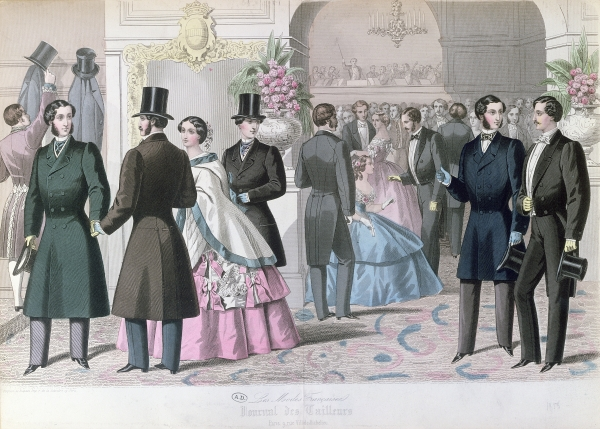

Présentation
Cathy Flahaut vient nous faire découvrir les danses de salon du XIXème siècle avec en point d'orgue un grand bal historique en costumes Napoléon III dans le Grand Salon de la Chambre de Commerce et d'Industrie d'Elbeuf, le 20 mars 2016. Pour celles et ceux qui rêvent de bals en crinolines, rejoignez-nous et invitez vos amis, parents, frères et soeurs à venir découvrir ses danses élégantes !
Parallèlement à sa carrière de professeur de danse contemporaine au Conservatoire National de Région de Lille et de formatrice pour le diplôme d’état à la danse contemporaine au Centre de Formation Professionnelle de Marcq-en-Baroeul, Cathy Flahaut se passionne pour les danses de bal du XIXème. Très vite, les quadrilles, galops, polkas et contredanses n’ont plus de secret pour elle et son mari qui l’accompagne. Elle fonde la Compagnie du Bal Mabille à Paris et organise des bals en costumes d’époque. Ce stage s’adresse aux danseurs classiques qui retrouveront les pas de mazurka ou de polka mais aussi au public désireux de découvrir ces danses de salon très élégantes et qui peuvent s’avérer aussi gaies et rythmées qu’un rock ou qu’une salsa ! De préférence, inscrivez-vous en couple !